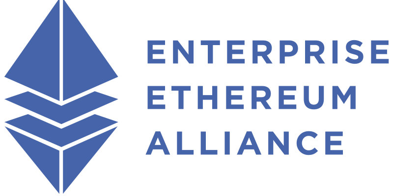

This version of the specification was SUPERSEDED on 13 December 2023 by the EEA EthTrust Security Levels Specification Version 2, available at https://entethalliance.org/specs/ethtrust-sl/v2/
Copyright © 2020-2022 Enterprise Ethereum Alliance.
This document defines the requirements for EEA EthTrust Certification, a set of certifications that a smart contract has been reviewed and found not to have a defined set of security vulnerabilities.
This section describes the status of this document at the time of its publication. Newer documents may supersede this document.
This specification is licensed by the Enterprise Ethereum Alliance, Inc. (EEA) under the terms of the Apache License, Version 2.0 [License] Unless otherwise explicitly authorised in writing by the EEA, you can only use this specification in accordance with those terms.
Unless required by applicable law or agreed to in writing, this specification is distributed on an "AS IS" BASIS, WITHOUT WARRANTIES OR CONDITIONS OF ANY KIND, either express or implied.
See the [License] for the specific language governing permissions and limitations.
This is version 1 of the EEA EthTrust Security Levels Specification. The EEA Board has reviewed this document and authorised publication as an EEA Specification as requested by the EEA EthTrust Security Levels Working Group.
The Working Group expects at time of writing that an update to this Specification will be published some time in the next 6 to 18 months
Please send any comments to the EEA at https://entethalliance.org/contact/.
This section is non-normative.
This document, the EEA EthTrust Security Levels Specification, defines the requirements for granting EEA EthTrust Certification to a smart contract that has undergone a security audit.
No audit can guarantee that a smart contract is secure against all possible vulnerabilities, as explained in 3. Security Considerations. However it can provide a certain assurance, backed not only by the reputation of the auditor issuing the certification, but by the collective reputations of the multiple experts in security from many competing organizations, who collaborated within the EEA to ensure this specification defines protections against a real and significant set of known vulnerabilities.
This section describes how to understand this specification, including the conventions used for examples and requirements, core concepts, references, informative sections, etc.
Definintions of terms are formatted Like this and subsequent references are Like This.
Bibliographic references e.g. to other documents are links to the relevant entry in the reference section, within square brackets: [CWE]
Links to requirements and good practices begin with a Security Level in square brackets "[]", and include the requirement name. They are rendered as links in bold type:
The formatting of requirements is described in detail in 1.1.2 How to Read a Requirement
Examples are given in some places. These are not requirements and are not normative. They are distinguished by a background with a border and title, like so:
In a few places a word is used as a variable, for example so it can be described further on in a statement or requirement. These are formatted as var.
The core of this document is the requirements, that collectively define EEA EthTrust Certification.
Requirements have
Some requirements at the same Security Level are grouped in a subsection, because they are related to a particular theme or area of potential attacks.
Most requirements or groups of requirements are followed by some explanation that can include why the requirement is important, how to test for it, links to Related Requirements, test cases, and links to other useful information.
The following requirement:
is a Security Level [S] requirement, as noted by the "[S]" before its name. Its name is No Unsafe Balance Check. Its URL as linked from the " 🔗 " character is https://entethalliance.org/specs/ethtrust-sl/#req-1-exact-balance-check.
The statement of requirement is that
Tested code MUST NOT make tests that ether balance is equal to (i.e. ==) a specified amount or the value of a variable.Following the requirement is a brief explanation of the relevant vulnerability, a link to further discussion, in this case in the security considerations section and in the "Smart Contract Weakness Classification Registry" [swcregistry] that includes test cases, and to the description of a related general vulnerability in the "Common Weakness Enumeration" [CWE].
Good Practices are formatted the same way as Requirements, with an apparent level of [GP]. However, as explained in 4.4 Recommended Good Practices meeting them is not necessary and does not in itself change conformance to this specification.
For some requirements, the statement will include an alternative condition, introduced with the keyword unless, that identifies one or more Overriding Requirements. These are requirements at a higher Security Level, that can be satisfied to achieve conformance if the Tested Code does not meet the lower-level requirement as stated. In some cases it is necessary to meet more than one Overriding Requirement to meet the requirement they override. In this case, the requirements are described as a Set of Overriding Requirements. It is necessary to meet all the requirements in a Set of Overriding Requirements in order to meet the requirement that is overriden.
In a number of cases, there will be more than one Overriding Requirement or Set of Overriding Requirements that can be met in order to satisfy a given requirement. For example, it is sometimes possible to meet a Security Level [S] Requirement either by directly fulfilling it, or by meeting a Set of Overriding Requirements at Security Level [M], or by meeting a Set of Overriding Requirements at Security Level [Q].
The purpose of Overriding Requirements is to simplify testing for simple cases that do not use features that need to be handled with extra care to avoid introducing vulnerabilities, while ensuring that more complex Tested Code is appropriately checked.
In a typical case of an Overriding Requirement for a Security Level [S] requirement, they apply in relatively unusual cases or where automated systems are generally unable to verify that Tested Code meets the requirement. Further manual verification of the applicable Overriding Requirement(s) can determine that the Tested Code is using a feature appropriately, and therefore passes the Security Level [S] requirement.
If there is not an Overriding Requirement for a requirement that the Tested code does not meet, the Tested code is not eligible for EEA EthTrust Certification. However even for such cases, note the Good Practice [GP] Meet as many requirements as possible; meeting any requirements in this specification will improve the security of smart contracts.
In the following requirement:
tx.origin", andtx.origin usage".The requirement that the tested code does not contain a tx.origin instruction
is automatically verifiable.
Tested Code that does have a valid use for tx.origin,
as decided by the auditor, and meets the Security Level [Q] Overriding Requirement
[Q] Verify tx.origin usage
conforms to this Security Level [S] requirement.
Requirements that are an Overriding Requirement for another, or are part of a Set of Overriding Requirements, expicitly mention that:
The smart contracts that power decentralized applications on Ethereum have been fraught with security issues, and today there is still no good way to see how secure an address or contract is before initiating a transaction. The Defi space in particular has exploded with a flurry of activity, with individuals and organizations approving transactions in token contracts, swapping tokens, and adding liquidity to pools in quick succession, sometimes without stopping to check security. For Ethereum to be trusted as a transaction layer, enterprises storing critical data or financial institutions moving large amounts of capital need a clear signal that a contract has had appropriate security audits.
Reviewing early, in particular before production deployment, is especially important in the context of blockchain development because the costs in time, effort, funds, and/or credibility, of attempting to update or patch a smart contract after deployment are generally much higher than in other software development contexts.
This smart contract security standard is designed to increase confidence in the quality of security audits for smart contracts, and thus to raise trust in the Ethereum ecosystem as a global settlement layer for all types of transactions across all types of industry sectors, for the benefit of the entire Ethereum ecosystem.
Certification also provides value to the actual or potential users of a smart contract, and others who may be affected by the use or abuse of a particular smart contract but are not themselves direct users. By limiting exposure to certain known weaknesses through EEA EthTrust Certification, these stakeholders benefit from reduced risk and increased confidence in the security of assets held in or managed by the Tested Code.
This assurance is not complete; for example it relies on the competence and integrity of the auditor issuing the certification. That may be incompletely knowable, and/or reflected in a professional reputation stemming from subsequently revealed information about the performance of Tested Code they have audited. This is especially so if the Tested Code becomes sufficiently high-profile to motivate exploitation of any known weaknesses remaining after certification.
Finally, smart contract developers and ecosystem stakeholders receive value when others (including direct competitors) complete the certification process, because it means those other contracts are less likely to generate exploitation-related headlines which can lead to negative perceptions of Ethereum technology as insecure or high risk, by the general public including business leaders, prospective customers/users, regulators, and investors.
The value of smart contract security certification is in some ways analogous to the certification processes applicable to aircraft parts. Most directly, it helps reduce risks for part manufacturers and the integrators who use those parts as components of a more complex structure, by providing assurance of a minimum level of quality. Less directly, these processes significantly reduce aviation accidents and crashes, saving lives and earning the trust of both regulators and customers who consider the safety and risk of the industry and its supporting technology as a whole. Many safety certification processes began as voluntary procedures created by a manufacturer, or specified and required by a consortium of customers representing a significant fraction of the total market. Having proven their value, some of these certification processes are now required by law, to protect the public (including ground-based bystanders).
This document does not create an affirmative duty of compliance on any party, though requirements to comply with it may be created by contract negotiations or other processes with prospective customers or investors.
We hope the value of the certification process motivates frequent use, and furthers development of automated tools that can make the evaluation process easier and cheaper.
This is the first version of this specification. The Working Group expects that experience with implementing it will lead to revisions in a subsequent version. As issues in the specification and challenges in the implementation are discovered, we hope such discoveries will lead to change requests and increased participation in the Enterprise Ethereum Alliance's EthTrust Security Levels Working Group or its successors, responsible for developing and maintaining this specification.
Security issues that this specification calls for checking are not necessarily obvious to smart contract developers, especially relative newcomers in a quickly growing field.
By walking their own code through the certification process, even if no prospective customer requires it, a smart contract developer can discover ways their code is vulnerable to known weaknesses and fix that code prior to deployment.
Developers ought to make their code as secure as possible. Instead of aiming to fulfil only the requirements to conform at a particular Security Level, ensuring that code implements as many requirements of this specification as possible per [GP] Meet As Many Requirements As Possible helps ensure the developer has considered all the vulnerabilities this specfication addresses.
Aside from the obvious reputational benefit, developers will learn from this process, improving their understanding of potential weaknesses and thus their ability to avoid them completely in their own work.
For an organization developing and deploying smart contracts, this process reduces the risks both to their credibility, and to their assets and other capital.
The Working Group seeks feedback on this specification: Implementation experience, suggestions to improve clarity, or questions if a particular section or requirement is difficut to understand.
We also explicitly want feedback about the use of a standard machine-readable format for Valid Conformance Claims, whether being suitable for storing on a blockchain is important for such a format, and for other use cases.
EEA members are encouraged to provide feedback through joining the Working Group. Anyone can also provide feedback through the EEA's contact pages at https://entethalliance.org/contact/ and it will be forwarded to the Working Group as appropriate.
We expect that new vunerabilities will be discovered after this specification is published. To ensure that we consider them for inclusion in a revised version, we welcome notification of them. EEA has created a specific email address to let us know about new security vulnerabilities: security-notices@entethalliance.org. Information sent to this address SHOULD be sufficient to identify and rectify the problem described, and SHOULD include references to other discussions of the problem. It will be assessed by EEA staff, and then forwarded to the Working Group to address the issue.
When these vulnerabilities affect the Solidity compiler, or suggest modifications to the compiler that would help mitigate the problem, the Solidity Development community SHOULD be notified, as described in [solidity-reports].
The key words MAY, MUST, MUST NOT, RECOMMENDED, and SHOULD in this document are to be interpreted as described in BCP 14 [RFC2119] [RFC8174] when, and only when, they appear in all capitals, as shown here.
This specification defines a number of requirements. As described in 1.1.2 How to Read a Requirement, each requirement has a Security Level (one, two or three), and a statement of the requirement that Tested Code must meet.
In order to achieve EEA EthTrust Certification at a specific Security Level, the Tested Code MUST meet all the requirements for that Security Level, including all the requirements for lower Security Levels. Some requirements can either be met directly, or by meeting one or more Overriding requirements that mean the requirement is considered met.
Section 4.4 Recommended Good Practices, contains further recommendations. There is no requirement to test for these; however careful implementation and testing is RECOMMENDED.
Note that good implementation of the Recommended Good Practices can enhance security, but in some cases incomplete or low-quality implementation could reduce security.
To grant Tested Code EEA EthTrust Certification, an auditor provides a Valid Conformance Claim, that the Tested Code meets the requirements of the Security Level for which it is certified.
There is no required format for a Valid conformance claim for Version 1 of this specification, beyond being legible and containing the required information as specified in this section.
A Valid Conformance Claim MUST include:
A Valid Conformance Claim for Security Level [Q] MUST contain a [SHA3-256] hash of the documentation provided to meet [Q] Document Contract Logic and [Q] Document System Architecture.
A Valid Conformance Claim SHOULD include
A Valid Conformance Claim MAY include:
Valid values of EVM versions
are those listed in the Solidity documentation [EVM-version].
As of July 2022 the two most recent are london and berlin.
This version of the specification does not make any restrictions on who can perform an audit and provide EEA EthTrust Certification. There is no certification process defined for auditors or tools who grant certification. This means that Auditors' claims of performing accurate tests are made by themselves. There is always a possibility of fraud, misrepresentation, or incompetence on the part of any auditor who offers "EEA EthTrust certification" for Version 1.
In principle anyone can submit a smart contract for verification. However submitters should be aware of any restrictions on usage arising from copyright conditions or the like. In addition, meeting certain requirements can be more difficult to demonstrate in a situation of limited control over the development of the smart contract.
The Working Group expects its own members, who wrote the specification, to behave to a high standard of integrity and to know the specification well, and notes that there are many others who also do so.
The Working Group or EEA MAY seek to develop an auditor certification program for subsequent versions of the EEA EthTrust Security Levels Specification.
An EEA EthTrust evaluation is performed on Tested Code, which means the Solidity source code for a smart contract or several related smart contracts, along with the bytecode generated by compiling the code with specified parameters.
If the Tested Code is divided into more than one smart contract, each deployable at a single address, it is referred to as a Set Of Contracts.
This section is non-normative.
Security of information systems is a major field of work. There are risks inherent in any system of even moderate complexity.
This specification describes testing for security problems in Ethereum smart contracts. However there is no such thing as perfect security. EEA EthTrust certification means that at least a defined minimum set of checks has been performed on a smart contract. This does not mean the Tested Code definitely has no security vulnerabilities. From time to time new security vulnerabilities are identified. Manual auditing procedures require skill and judgement. This means there is always a possibility that a vulnerability is not noticed in review.
Ethereum is based on a model of account holders authorising transactions between accounts. It is very difficult to stop a malicious actor with a privileged key from using that to cause undesirable or otherwise bad outcomes.
Smart contracts in Ethereum are immutable by default. However, for some scenarios, it is desirable to be able to modify them to add new features or fix bugs. An Upgradable Contract is any type of contract that fulfills these needs by enabling changes to its code while preserving storage and balance at a fixed address.
Some of the most common and useful patterns for Upgradable Contracts utilize a proxy. A Proxy Contract is a simple wrapper or "proxy" which users interact with directly and is in charge of forwarding transactions to and from another contract (called the Execution Contract in this document), which contains the logic. The Execution Contract can be replaced while the Proxy Contract, acting as the access point, is never changed. Both contracts are still immutable in the sense that their code cannot be changed, but one Execution Contract can be swapped out with another. The Proxy Contract can thus point to a different implementation and in doing so, the software is "upgraded".
This means that a Set of Contracts that follow this pattern to make an Upgradable Contract generally cannot be considered immutable, as the Proxy Contract itself could redirect calls to a new Execution Contract, which may be insecure or malicous. By meeting the requirements for access control in this specification to restrict upgrade capabilities enabling new Execution Contracts to be deployed, and by documenting upgrade patterns and following that documentation per [Q] Implement as Documented, deployers of Tested Code can demonstrate reliability. In general, EthTrust certification of a Proxy Contract does not apply to the internal logic of an Upgradable Contract, so a new Execution Contract needs to be certified before upgrading to it through the Proxy Contract.
A common feature of Ethereum networks is the use of Oracles; functions that can be called to provide information from outside a blockchain, from weather forecasts to random number generation. This specification contains requirements to check that smart contracts are sufficiently robust to deal appropriately with whatever information is returned (including the possibility of mal-formed data, that can potentially be delibrately crafted as an attack). However, determining whether data produced by an Oracle is actually true is beyond the scope of this specification, and it is possible that an Oracle provides misinformation or even actively produces harmful disinformation.
Code that relies on external code can introduce multiple attack vectors. This includes cases where an external dependency contains malicious code or has been subject to malicious manipulation through security vulnerabilities. However, failure to adequately manage the possible outcomes of an external call can also introduce security vulnerabilities.
One of the most commonly cited vulnerabilities in Ethereum Smart Contracts is Re-entrancy Attacks. These attacks allow malicious contracts to make a call back into the contract that called it before the originating contract's function call has been completed. This effect causes the calling contract to complete its processing in unintended ways, for example, by making unexpected changes to its state variables.
Some requirements in the document refer to Malleable Signatures. These are signatures created according to a scheme constructed so that, given a message and a signature, it is possible to efficiently compute the signature of a different message - usually one that has been transformed in specific ways. While there are very valuable use cases that such signature schemes allow, if not used carefully they can lead to vulnerabilites, which is why this specfication seeks to constrain their use appropriately.
For more information on this topic, and the potential for exploitation, see also [chase].
Gas Griefing is the deliberate abuse of the Gas mechanism that Ethereum uses to regulate the consumption of computing power, to cause an unexpected or adverse outcome much in the style of a Denial of Service attack. Because Ethereum is designed with the Gas mechanism as a regulating feature, it is insufficient to simply check that a transaction has enough Gas; checking for Gas Griefing needs to take into account the goals and business logic that the Tested Code implements.
In addition, a common feature of Ethereum network upgrades is to change the Gas Price of specific operations. EEA EthTrust certification only applies for the EVM version(s) specified; it is not valid for other versions. Thus it is important to recheck code to ensure its security properties remain the same across network upgrades, or take remedial action.
MEV, used in this document to mean "Maliciously Extracted Value" refers to the potential for block producers or other paticipants in a blockchain to extract value that is not intentionally given to them, in other words to steal it, by maliciously reordering transactions, as in Timing Attacks, or suppressing them.
For example a Smart Contract promises an award to the first transaction that answers a question. A block producer that knows the answer can drop all transactions that send the answer, except for their own in the block.
The term is commonly expanded as "Miner Extracted Value", as in the example above. But MEV can be exploited by other participants, for example duplicating most of a submitted transaction, offering a higher fee so it is processed first. It is also sometimes called "Maximum Extractable Value".
Some MEV attacks can be prevented by requires careful consideration of the information that is included in a transaction, including the parameters required by a contract.
Other strategies include the use of hash commitment schemes [hash-commit], batch execution, private transactions [EEA-clients], Layer 2 [EEA-L2], or an extension to establish the ordering of transactions before releasing sensitive information to all nodes participating in a blockchain.
The Ethereum Foundation curates up to date information on MEV [EF-MEV].
Timing Attacks are a class of MEV attacks where an adversary benefits from placing their or a victim's transactions earlier or later in a block. They include Front-Running, Back-Running, and Sandwich Attacks.
Front-Running is based on the fact that transactions are visible to the participants in the network before they are added to a block. This allows a malicious participant to submit an alternative transaction, frustrating the aim of the original transaction.
In a system designed to attest original authorship, a malicious participant uses the information in a claim of authorship to create a rival claim, and adds their claim to a block first.
Back-Running is similar to Front-Running, except the attacker places their transactions after the one they are attacking.
In Sandwich Attacks, an attacker places a victim's transaction undesirably between two other transactions.
An attacker creates a buy and sell transaction before and after a victim's buy transaction, artificially driving the price up for the victim and providing no-risk profit for the attacker at the victim's expense.
This version of the specification requires the compiled bytecode as well as the Solidity Source Code that create the Tested Code. Solidity is by a large measure the most common programming language for Ethereum smart contracts, and benefits of requiring source code in Solidity include
Solidity allows the source code to specify the compiler version used. This specification currently has no requirement for a specific pragma, but it is a good practice to ensure that the pragma refers to a bounded set of versions, where it is known that those versions of the compiler produce identical bytecode from the given source code.
There are some drawbacks to requiring Solidity Source code. The most obvious is that some code that is not written in Solidity. Different languages have different features and often support different coding styles.
Perhaps more important, it means that a deployed contract, which may have been written in Solidity, cannot be tested directly without someone making the source code available.
Another important limitation introduced by reading source code is that it is subject to Homoglyph Attacks, where characters that look the same but are different such as Latin "p" and Cyrillic "р", can deceive people visually reading the source code, to disguise malicious behaviour. There are related attacks that use features such as Unicode Direction Control Characters or take advantage of inconsistent normalisation of combining characters to achieve the same type of deceptions.
From time to time the Ethereum community implements a Network Upgrade, sometimes also called a hard fork. This is a change to Ethereum that is backwards-incompatible. Because they typically change the EVM, Ethereum Mainnet Network Upgrades generally correspond to EVM versions.
A Network Upgrade can affect more or less any aspect of Ethereum, including changing EVM opcodes or their Gas price, changing how blocks are added, or how rewards are paid, among many possibilities.
Because Network Upgrades are not guaranteed to be backwards compatible, a newer EVM version can process bytecode in unanticipated ways. If a Network Upgrade changes the EVM to fix a security problem, it is important to consider that change, and it is a good practice to follow that upgrade. Enterprise Ethereum (as defined in [EEA-clients] and [EEA-chains]) follows Ethereum Network Upgrades.
Because claims of conformance to this specification are only valid for specific EVM versions, a Network Upgrade can mean an updated audit is needed to maintain valid EEA EthTrust Certification for the current Ethereum network. Network Upgrades typically only impact a few features. This helps limit the effort necessary to audit code after an upgrade: often there will be no changes that affect the Tested Code, or review of a small proportion that is the only part affected by a Network Upgrade will be sufficient to renew EEA EthTrust Certification.
EEA EthTrust Certification is available at three Security Levels. The Security Levels describe minimum requirements for certifications at each Security Level: [S], [M], and [Q]. These Security Levels provide successively stronger assurance that a smart contract does not have specific security vulnerabilities.
The optional Recommended Good Practices, correctly implemented, further enhance the Security of smart contracts. However it is not necessary to test them to conform to this specification.
The vulnerabilities addressed by this specification come from a number of sources, including Solidity Security Alerts [solidity-alerts], the Smart Contract Weakness Classification [swcregistry], TMIO Best practices [tmio-bp], various sources of Security Advisory Notices, and practical tests that auditors perform.
EEA EthTrust Certification at Security Level [S] is intended to allow an unguided automated tool to analyze most contracts' bytecode and source code, and determine whether they meet the requirements. For some situations that are difficut to verify automatically, usually only likely to arise in a small minority of contracts, there are higher-level Overriding Requirements that can be fulfilled to meet a requirement for this Security Level.
To be eligible for EEA EthTrust Certification for Security Level [S], Tested code MUST fulfil all Security Level [S] requirements, unless it meets the applicable Overriding Requirement(s) for any Security Level [S] requirement it does not meet.
[S] No CREATE2
Tested code MUST NOT contain a CREATE2 instruction.
unless it meets the Set of Overriding Requirements
The CREATE2 opcode provides the ability to interact with addresses
that do not exist yet on-chain but could possibly eventually contain code.
While this can be useful for deployments and counterfactual interactions with contracts,
it may allow external calls to code that is not yet known, and could turn out to be
malicous or insecure due to errors or weak protections.
[S] No tx.origin
Tested code MUST NOT contain a tx.origin instruction
unless it meets the Overriding Requirement
[Q] Verify tx.origin usage
tx.origin is a global variable in Solidity which returns the address of the account
that sent the transaction. A contract using tx.origin could be made vulnerable
if an authorized account calls into a malicious contract, allowing it to pass the authorization check
in unintended cases. Use
msg.sender for authorization instead of tx.origin.
See also SWC-115 [swcregistry].
[S] No Exact Balance Check
Tested code MUST NOT test that the balance of an account is exactly equal to
(i.e. ==) a specified amount or the value of a variable.
Testing the balance of an account as a basis for some action has risks associated with unexpected receipt of ether or another token, including tokens deliberately transfered to cause such tests to fail as an MEV attack.
See also the Related Requirements [M] Sources of Randomness, [M] Don't misuse block data, and [Q] Protect against MEV Attacks, 3.6 MEV (Maliciously Extracted Value), SWC-132 in [swcregistry], and improper locking as described in [CWE-667].
[S] No Conflicting Inheritance
Tested code MUST NOT include more than one variable, or operative function with
different code, with the same name
unless it meets the
Overriding Requirement:
[M] Document Name Conflicts.
In most programming languages, including Solidity, it is possible to use the same name for variables or functions that have different types or (for functions) input parameters. This can be hard to interpret in the source code, meaning reviewers misunderstand the code or are maliciously misled to do so, analogously to Homoglyph Attacks.
This requirement means that unless the Overriding Requirement is met, any function or variable name will not be repeated, to eliminate confusion. It does however allow functions to be overridden, e.g. from a Base contract, so long as there is only one version of the function that operates within the code.
See also the related requirement [M] Compiler Bug SOL-2020-2, and the documentation of function inheritance in [solidity-functions]
[S] No Hashing Consecutive Variable Length Arguments
Tested Code MUST NOT use abi.encodePacked()
with consecutive variable length arguments.
The elements of each variable-length argument to abi.encodePacked()
are packed in order prior to hashing.
Hash collisions are possible by rearranging the elements between consecutive,
variable length arguments while maintaining that their concatenated order is the same.
[S] No Self-destruct
Tested code MUST NOT contain the selfdestruct() instruction
or its now-deprecated alias suicide()
unless it meets the Set of Overriding Requirements
If the selfdestruct() instruction (or its deprecated alternative suicide()) is not
carefully protected, malicious code can call it and destroy a contract, sending any Ether
held by the contract, which may result in stealing it. This feature can often break
immutability and trustless guarantees to introduce numerous security issues. In addition,
once the contract has been destroyed any Ether sent is simply lost, unlike when a contract
is disabled which causes a transaction sending Ether to revert.
See also SWC-106 in [swcregistry].
[S] No assembly()
Tested Code MUST NOT contain the assembly() instruction
unless it meets the Set of Overriding Requirements
The assembly() instruction allows lower-level code to be included. This give the authors
much stronger control over the bytecode that is generated, which can be used for example
to optimise gas usage. However, it also potentially exposes a number of vulnerabilites and
bugs that are additional attack surfaces, and there are a number of ways to use assembly()
to introduce deliberately malicious code that is difficult to detect.
[S] No Unicode Direction Control Characters
Tested code MUST NOT contain any of the Unicode Direction Control Characters
U+2066, U+2067, U+2068, U+2029,
U+202A, U+202B, U+202C, U+202D,
or U+202E
unless it meets the Overriding Requirement
[M] No Unnecessary Unicode Controls.
Changing the apparent order of characters through the use of invisible Unicode direction control characters can mask malicious code, even in viewing source code, to deceive human auditors.
More information on Unicode direction control characters is available in the W3C note How to use Unicode controls for bidi text [unicode-bdo].
See also the Related Requirements: [M] Protect External Calls, [M] Handle External Call Returns, and [Q] Verify External Calls.
[S] Check External Calls Return
Tested Code that makes external calls using the Low-level Call Functions (i.e. call,
delegatecall, staticcall, send, and transfer)
MUST check the returned value from each usage to determine whether the call failed.
Normally, exceptions in subcalls "bubble up", unless they are handled in a try/catch. However Solidity defines a set of Low-level Call Functions:
call(),delegatecall(),staticcall(),send(), andtransfer().Calls using these functions behave differently. They return a boolean indicating whether the call completed successfully. Not testing explicitly whether these calls fail may lead to unexpected behavior in the caller contract.
See also SWC-104 in [swcregistry], error handling documentation in [error-handling], unchecked return value as described in [CWE-252], and the Related Requirements: [S] Use Check-Effects-Interaction, [M] Handle External Call Returns, [Q] Verify External Calls
[S] Use Check-Effects-Interaction
Tested code that makes external calls MUST use the
Checks-Effects-Interactions
pattern to protect against Re-entrancy Attacks
unless it meets the Set of Overriding Requirements
or it meets the Set of Overriding Requirements
The Checks-Effects-Interactions pattern ensures that validation of the request, and changes to the state variables of the contract, are performed before any interactions take place with other contracts. When contracts are implemented this way, the scope for Re-entrancy Attacks is reduced significantly.
See also 3.3 External Calls and Re-entrancy, the explanation of "Checks-Effects-Interactions" [c-e-i] in "Solidity Security Considerations" [solidity-security], and "Checks Effects Interactions" in [solidity-patterns].
[S] No delegatecall()
Tested Code MUST NOT contain the delegatecall() instruction
unless it meets the Overriding Requirement:
[M] Protect External Calls.
or it meets the Set of Overriding Requirements
The delegatecall() instruction enables an external contract to manipulate the state
of a contract that calls it, because the code is run with the caller's balance, storage,
and address.
The requirements in this subsection can be met by using a sufficiently recent version of the Solidity compiler. Otherwise, there are Overriding Requirements to perform the same testing that the up-to-date compiler checks:
storage or memory.constructor.[S] No Overflow/Underflow
Tested code MUST NOT use a version of Solidity older than 0.8.0
unless it meets the Set of Overriding Requirements
Like most programming languages, the EVM and Solidity represent numbers as a set of bytes that by default has a fixed length. This means arithmetic operations on large numbers can "overflow" the size by producing a result that does not fit in the space allocated. This results in corrupted data, and can be used as an attack on code. The [CWE] registry of generic code vulnerabilities contains many overflow attacks; it is a well-known vector that is exposed in many systems and has regularly been exploited.
There are many ways to check for overflows, or underflows (where a negative number is large enough in magnitude to trigger the same effect). Since version 0.8.0 Solidity includes built-in protection. Tested Code compiled with an earlier version needs to check explicitly to mitigate this potential vulnerability.
[S] Explicit Storage
Tested code MUST NOT use a version of Solidity older than 0.5.0
unless it meets the Overriding Requirement:
[M] Declare storage Explicitly.
Versions of Solidity older before 0.5.0 allowed contracts to create uninitialized
storage, which could be attacked by malicious code.
See the section Uninitialised Storage Pointers in [sigp] for further discussion of the vulnerability, and how it has been exploited, and SWC-109 in [swcregistry] for some more exammple code.
[S] Explicit Constructors
Tested code MUST NOT use a version of Solidity older than 0.4.22
unless it meets the Overriding Requirement:
[M] Declare Constructors Explicitly.
Versions of Solidity older than 0.4.22 define constructors implicitly, as a function
with the same name as a contract. If the source code is copied, and the contract's name
changed, the function is no longer recognized as a constructor.
There are a number of known security bugs in various versions of the Solidity compiler.
The requirements in this subsection ensure that Tested Code does not trigger these bugs.
The name of the requirement includes the uid first recorded for the bug in
[solidity-bugs-json], as a key that can be used to find more information about the bug.
[solidity-bugs] describes the conventions used for the JSON-formatted list of bugs.
The requirements in this subsection are ordered according to the latest compiler versions that are vulnerable, to slightly simplify assessment given the compiler version in use. Implementing the Good Practice of the Related Requirement [GP] Use Latest Compiler means that Tested Code passes all requirements in this subsection.
Some compiler-related bugs are in the 4.2.5 Security Level [M] Compiler Bugs and Overriding Requirements as Security Level [M] requirements, either because they are Overriding Requirements for requirements in this subsection, or because they are part of a Set of Overriding Requirements for Security Level [S] requirements that already ensure that the bug cannot be triggered.
Some bugs were introduced in known versions, while others are assumed to have existed in all versions before they were fixed.
[S] Compiler Bug SOL-2022-5 with .push()
Tested code that copies bytes arrays from calldata or memory whose size is not
a multiple of 32 bytes, and has an empty .push() instruction that writes to the resulting
array,
MUST NOT use a version of Solidity older than 0.8.15.
Until 0.8.15 copying memory or calldata whose length is not a multiple of 32 bytes
could expose data beyond the data copied, which could be observable using code through
assembly().
See also the 15 June 2022 security alert and the related requirement
[M] Compiler Bug SOL-2022-5 in assembly().
[S] Compiler Bug SOL-2022-3
Tested code that
memory and calldata pointers for the same function, andMUST NOT use a version of Solidity between 0.6.9 and 0.8.13 (inclusive).
Compilers from 0.6.9 until it was fixed in 0.8.13 had a bug that incorrectly allowed
internal or public calls to use a simpification only valid for external calls, treating
memory and calldata as equivalent pointers.
See also the 17 May 2022 security alert.
[S] Compiler Bug SOL-2022-2
Tested code with a nested array that
abi.encode(), orMUST NOT use a version of Solidity between 0.6.9 and 0.8.13 (inclusive).
Compilers from 0.5.8 until it was fixed in 0.8.13 had a bug that meant a single-pass
encoding and decoding of a nested array could read data beyond the calldatasize().
See also the 17 May 2022 security alert.
[S] Compiler Bug SOL-2022-1
Tested code that
bytesNN type shorter than 32 bytes, orbytesNN type,and passes such literals to abi.encodeCall() as the first parameter,
MUST NOT use version 0.8.11 nor 0.8.12 of Solidity.
Solidity defines a set of types for variables known collectively as
bytesNN or Fixed-length Variable types,
that specify the length of the variable as a fixed number of bytes, following the pattern
bytes1bytes2bytes10bytes32Compilers from 0.8.11 and 0.8.12 had a bug that meant literal parameters were incorrectly
encoded by abi.encodeCall() in certain circumstances.
See also the 16 March 2022 security alert.
[S] Compiler Bug SOL-2021-4 Tested Code that uses custom value types shorter than 32 bytes SHOULD not use version 0.8.8 of Solidity.
Compiler version 0.8.8 had a bug that assigned a full 32 bytes of storage to custom types that did not need it. This can be misused to enable reading arbitrary storage, as well as causing errors if the Tested Code contains code compiled using different Compiler versions.
See also the 29 September 2021 security alert
[S] Compiler Bug SOL-2021-2
Tested code that uses abi.decode() on byte arrays as memory,
MUST NOT use the ABIEncoderV2 with a version of Solidity between 0.4.16 and 0.8.3
(inclusive).
Version 0.4.16 introduced a bug, fixed in 0.8.4, that meant the ABIEncoderV2
incorrectly validated pointers when reading memory byte arrays, which could result in
reading data beyond the array area due to an overflow error in calcuating pointers.
See also the 21 April 2021 security alert.
[S] Compiler Bug SOL-2021-1
Tested code that has 2 or more occurrences of an instruction
keccak(mem,length) where
MUST NOT use the bytecode optimzier with a version of Solidity older than 0.8.3.
Compilers before 0.8.3 had an optimizer bug that meant keccak hashes, calculated for the same content but different lengths that were not multiples of 32 bytes incorrectly used the first value from cache instead of recalculating.
See also the 23 March 2021 security alert.
[S] Compiler Bug SOL-2020-11-push
Tested code that copies an empty byte array to storage, and subsequently increases
the size of the array using push() MUST NOT a use version of Solidity
older than 0.7.4.
Compilers before 0.7.4 had a bug that meant data would be packed after an empty array,
and if the length of the array is subsequently extended by push(),
that data would be readable from the array.
See also the 19 October 2020 security alert.
[S] Compiler Bug SOL-2020-10
Tested code that copies an array of types shorter than 16 bytes to a longer array
MUST NOT a use version of Solidity older than 0.7.3.
Compilers before 0.7.3 had a bug that meant when array data for types shorter than 16 bytes are assigned to a longer array, the extra values in that longer array are not correctly reset to zero.
See also the 7 October 2020 security alert.
[S] Compiler Bug SOL-2020-9
Tested code that defines Free Functions MUST NOT use version 0.7.1 of Solidity.
Solidity version 0.7.1 introduced Free Functions [solidity-functions]:
Functions that are defined in the source code of smart contract but outside the
scope of the formal contract declaration.
Free Functions have internal visibility, and the compiler "inlines" them to the contracts that call them. The solidity documentation explains that they are:
executed in the context of a contract. They still have access to the variable this, can call other contracts, send them Ether and destroy the contract that called them, among other things. The main difference to functions defined inside a contract is that free functions do not have direct access to storage variables and functions not in their scope.https://docs.soliditylang.org/en/latest/contracts.html#functions
The 0.7.1 compiler did not correctly distinguish overlapping Free Function declarations, meaning that the wrong function could be called.
See examples of a passing contract and a failing contract for this requirement.
[S] Compiler Bug SOL-2020-8
Tested code that calls internal library functions with calldata parameters
called via using for MUST NOT use version 0.6.9 of Solidity.
The 0.6.9 compiler incorrectly copied calldata parameters passed to
internal library functions passed with using for as if they were calling to
external library functions, leading to stack corruption and an incorrect jump destination.
See also a github issue with code example.
[S] Compiler Bug SOL-2020-6
Tested code that accesses an array slice using an expression for the starting index
that can evaluate to a value other than zero
MUST NOT use the ABIEncoderV2 with a version of Solidity between 0.6.0 and 0.6.7 (inclusive).
Compiler version 0.6.0 introduced a bug fixed in 0.6.8 that incorrectly calculated
index offsets for the start of array slices, used in dynamic calldata types,
when using the ABIEncoderV2.
[S] Compiler Bug SOL-2020-7
Tested code that passes a string literal containing two consecutive backslash ("\")
characters to an encoding function or an external call
MUST NOT use the ABIEncoderV2 with a version of Solidity between 0.5.14 and 0.6.7 (inclusive).
Compiler version 0.5.14 introduced a bug fixed in 0.6.8 that incorrectly encoded consecutive backslash characters in string literals when passing them to an external function, or an enncoding function, when using the ABIEncoderV2.
[S] Compiler Bug SOL-2020-5
Tested code that defines a contract that does not include a constructor but
has a base contract that defines a constructor not defined as payable
MUST NOT use a version of Solidity between 0.4.5 and 0.6.7 (inclusive),
unless it meets the Overriding Requirement
[M] Check Constructor Payment.
Solidity version 0.4.5 introduced a check intended to result in contract creation reverting
if value is passed to a constructor that is not explicitly marked as payable.
If the constructor was inherited from a base instead of explicitly defined in the contract,
this check did not function properly until version 0.6.8, meaning the creation would not
revert as expected.
[S] Compiler Bug SOL-2020-4
Tested code that makes assignments to tuples that
calldata arrayMUST NOT use a version of Solidity older than 0.6.4.
Solidity version 0.1.6 introduced a bug fixed in 0.6.5 that meant tuple assignments
involving nested tuples, pointers to external functions, or references to dynamically sized
calldata arrays were corrupted due to incorrectly calculating the number of stack slots.
[S] Compiler Bug SOL-2020-3
Tested code that declares arrays of size larger than 2^256-1 MUST NOT use a version
of Solidity older than 0.6.5.
Compiler version 0.2.0 introduced a bug, fixed in version 0.6.5, that meant no overflow check was performed for the creation of very large arrays, meaning in some cases an overflow error would occur that would use result in consuming all gas in a transaction due to the memory handling error introduced in compiling the contract.
[S] Compiler Bug SOL-2020-1
Tested code that declares variables inside a for loop that contains a break
or continue statement MUST NOT use the Yul Optimizer with version 0.6.0 nor a version
of Solidity between 0.5.8 and 0.5.15 (inclusive).
A bug in the Yul Optimiser in versions from 0.5.8 to 0.5.15 and in version 0.6.0
meant assignments for variables declared inside a for loop that contained a break or
continue statement could be removed.
[S] Compiler Bug SOL-2020-11-length
Tested code that copies an empty byte array to storage, and subsequently increases
the size of the array by assigning the length attribute MUST NOT
use a version of Solidity older than 0.6.0.
Compilers before 0.6.0 had a bug that meant data would be packed after an empty array,
and if the length of the array were then extended by assigning the length attribute
that data would be readable from the array. From version 0.6.0 it was no longer possible
to extend an array by assigning the length, which became read-only.
See also the 19 October 2020 security alert, and an example contract that fails this requirement
[S] Compiler Bug SOL-2019-10
Tested code MUST NOT use the combination of all of
A bug in version 0.5.14 that required multiple compiler options to trigger could result in data corruption in storage.
[S] Compiler Bugs SOL-2019-3,6,7,9
Tested code that uses struct or arrays MUST NOT use the ABIEncoderV2 option
with a version of Solidity between 0.4.16 and 0.5.10 (inclusive).
Compiler version 0.5.6 introduced bug SOL-2019-9 fixed in 0.5.11 that meant reading a
struct through calldata which had dyamically encoded members that were statically sized
resulted in corrupted data. Bugs SOL-2019-6 and SOL-2019-7 introduced in compiler 0.4.16
and fixed in compiler 0.5.9 and 0.5.10 respectively meant that data encoded in or read from
a struct could be corrupted. Bug SOL-2019-3 from 0.4.19 to 0.4.25 and from
0.5.0 to 0.5.7 could corrupt data, both in the struct and other encoded data,
when encoding a struct. All of these bugs were triggered by using the ABIEncoderV2.
See also the 26 March 2019 security alert, and the 25 June 2019 security alert.
[S] Compiler Bug SOL-2019-8
Tested code that assigns an array of signed integers to an array of a different type
MUST NOT use a version of Solidity between 0.4.7 and 0.5.9 (inclusive).
Compiler version 0.4.7 introduced a bug fixed in 0.5.10 that meant assigning an array of signed integers to another array of different type corrupted negative values.
See also the 25 June 2019 security alert.
[S] Compiler Bug SOL-2019-5
Tested code that calls an uninitialized internal function pointer
in the constructor
MUST NOT use a version between 0.4.5 and 0.4.25 (inclusive) nor a version between
0.5.0 and 0.5.7 (inclusive) of Solidity.
A bug in compilers versions 0.4.5 to 0.4.25 and versions 0.5.0 until fixed in 0.5.8 meant calls to unitialized function pointers in constructors did not revert as expected and as they do in deployed code.
[S] Compiler Bug SOL-2019-4
Tested code that uses events containing contract types, in libraries,
MUST NOT use a version of Solitidy between 0.5.0 and 0.5.7.
Compiler version 0.5.0 introduced a bug fixed in 0.5.8 that meant an incorrect hash is logged if library events contain contract types.
[S] Compiler Bug SOL-2019-2
Tested code that makes index access to bytesNN types with a second parameter
(not the index) whose compile-time value evaluates to 31
MUST NOT use the Optimizer with versions 0.5.5 nor 0.5.6 of Solitidy.
Version 0.5.5 introduced an Optimizer bug fixed in 0.5.7 where a second parameter value
of "31" for a byte opcode resulted in unexpected values.
See also the related requirement
[M] Compiler Bug SOL-2019-2 in assembly().
[S] Compiler Bug SOL-2019-1
Tested code that nests bitwise shifts to produce a total shift of more than 256 bits
and compiles for the Constantinople or later EVM version
MUST NOT use the Optimizer option with version 0.5.5 of Solidity.
Compiler version 0.5.5 introduced a bug fixed in 0.5.6 that meant nested bitwise shifts could be incorrectly optimized.
See also the 26 March 2019 security alert.
[S] Compiler Bug SOL-2018-4
Tested code that has a match for the regexp [^/]\\*\\* *[^/0-9 ]
MUST NOT use a version of Solidity older than 0.4.25.
Compilers before 0.4.25 had a bug that meant exponents calculated using **
with a type that is shorter than 256 bits, not shorter than the type of the base,
and containing dirty higher order bits could produce an incorrect result.
See also the 13 September 2018 security alert.
[S] Compiler Bug SOL-2018-3
Tested code that uses a struct in events
MUST NOT use a version of Solidity between 0.4.17 and 0.4.24 (inclusive).
Compilers from 0.4.17 until it was fixed in 0.4.25 had a bug that meant when events used
structs, the address of the struct was logged instead of the data.
See also the 13 September 2018 security alert, and an example contract that fails this requirement
[S] Compiler Bug SOL-2018-2
Tested code that calls a function matching the regexp
returns[^;{]*\\[\\s*[^\\] \\t\\r\\n\\v\\f][^\\]]*\\]\\s*\\[\\s*[^\\] \\t\\r\\n\\v\\f][^\\]]*\\][^{;]*[;{]
MUST NOT use a version of Solidity older than 0.4.22.
Compilers between 0.1.4 and 0.4.21 incorrectly interpreted array values as memory pointers when a function that returns a fixed-size multidimensional array is called.
See also the 13 September 2018 security alert.
[S] Compiler Bug SOL-2018-1
Tested code that both a new-style constructor (using the constructor
keyword) and an old-style constructor (a function with the same name as the contract),
which are not exactly the same MUST NOT use version 0.4.22 of Solidity.
Compiler version 0.4.22 had a bug that means it is unclear which constructor function is used.
It is unnecessary to use the old-style constructor in this case, and not using it avoids triggering the bug.
See also the related requirements [S] Explicit Constructors and [M] Declare Constructors Explicitly.
[S] Compiler Bug SOL-2017-5
Tested code with a function that is payable whose name consists only of
any number of zeros ("0"), and does not have a fallback function,
MUST NOT use a version of Solidity older than 0.4.18.
Compilers before 0.4.18 had a bug that meant such a function would be called instead of a fallback function if Ether is sent without data.
[S] Compiler Bug SOL-2017-4
Tested code that uses the delegatecall() instruction
MUST NOT use a version of Solidity older than 0.4.15.
Compilers from 0.3.0 to 0.4.14 had a bug that meant if delegateCall() returned a value
that started with 32 bytes of zeros, it would be read as false instead of true.
[S] Compiler Bug SOL-2017-3
Tested code that uses the ecrecover() pre-compile
MUST NOT use a version of Solidity older than 0.4.14
unless it meets the Overriding Requirement
[M] Validate ecrecover() Input.
Before version 0.4.14 Solidity had a bug that meant malformed input to the ecrecover()
instruction could cause an unauthorised read of data in memory, without raising an exception
or other signal that something had gone wrong.
[S] Compiler Bug SOL-2017-2
Tested code with functions that accept 2 or more parameters, of which any but the last are of bytesNN type
MUST NOT use a version of Solidity older than 0.4.12.
Compilers before 0.4.12 had a bug that meant when the empty string "" was passed
as a parameter value for a function that expected a Fixed-length Variable,
the encoder simply ignored it, thus assigning subsequent arguments
to the wrong parameter and corrupting the function call.
See an example contractthat fails this requirement.
[S] Compiler Bug SOL-2017-1
Tested code that contains any number that either begins with 0xff and ends
with 00, or begins with 0x00 and ends with ff, twice, OR
uses such a number in the constructor,
MUST NOT use the Optimizer with a version of Solidity older than 0.4.11.
The Optimizer for Compilers before 0.4.11 had a bug that meant certain numbers were corrupted by an attempt to optimise gas or constructor size.
See also the 3 May 2017 security alert.
[S] Compiler Bug SOL-2016-11
Tested code that uses a version older than 0.4.7 of Solidity MUST NOT
call the Identity Contract
UNLESS it meets the Overriding Requirement
[M] Compiler Bug Check Identity Calls.
Compilers before 0.4.7 had a bug that caused data corruption at jump destinations.
[S] Compiler Bug SOL-2016-10
Tested code MUST NOT use the Optimizer option with version 0.4.5 of Solidity.
Compiler version 0.4.5 had an Optimizer bug that caused data corruption at jump destinations.
See also the Related Requirement [S] Compiler Bug SOL-2016-4.
[S] Compiler Bug SOL-2016-9
Tested code that use variables of a type shorter than 17 bytes
MUST NOT use a version of Solidity older than 0.4.4.
Compilers between 0.1.6 and 0.4.4 packed shorter data types in a way that potentially allowed the overwriting of variables.
See also SWC-124 [swcregistry].
[S] Compiler Bug SOL-2016-8
Tested code that uses the sha3() instruction
MUST NOT use the Optimizer option with a version of Solidity older than 0.4.3.
Compilers before 0.4.3 had a bug in the Optimizer that incorrectly cached some sha3()
hashes. Note that the sha3() instruction is disallowed since version 0.5.0,
replaced by the keccak256() instruction.
[S] Compiler Bug SOL-2016-7
Tested code that uses delegatecall() from a function that can receive
Ether to call a Library Function MUST NOT use versions 0.4.0 or 0.4.1 of Solidity.
Compilers 0.4.0 and 0.4.1 had a bug that incorrectly rejected Library Function calls
made with delegatecall() from a function that had received Ether, interpreting it as
an attempt to send Ether to the Library Function.
See also the Related Requirement [S] Compiler Bug SOL-2017-4, and note that meetng that requirement means this requirement will automatically be met.
[S] Compiler Bug SOL-2016-6
Tested code that sends Ether MUST NOT use a version of Solidity older than 0.4.0
unless it meets the overriding requirement
[M] Compiler Bug No Zero Ether Send.
Compilers before 0.4.0 had a bug that meant transactions that send Ether but with a zero value fail to provide gas, causing an exception.
[S] Compiler Bug SOL-2016-5
Tested code that creates a dynamically sized array with a length that can be zero
MUST NOT use a version of Solidity older than 0.3.6.
Compilers before 0.3.6 had a bug that meant dynamically created arrays with a zero length created code that did not terminate, and consumed all gas.
[S] Compiler Bug SOL-2016-4
Tested code that creates a Jump Destination opcode
MUST NOT use the Optimizer with versions of Solidity older than 0.3.6.
Compilers before 0.3.6 had an Optimizer bug that meant data corruption could occur due to incorrectly computing state at jump destinations.
[S] Compiler Bug SOL-2016-3
Tested code that compares the values of data of type bytesNN
MUST NOT use a version of Solidity older than 0.3.3.
Compilers before 0.3.3 had a bug in the way they compared values of Fixed-Length Variables that meant the comparison would read higher-order bits beyond the size of the variable, and so could produce an incorrect result.
[S] Compiler Bug SOL-2016-2
Tested code that uses arrays, with data types whose size is less than 17 bytes
MUST NOT use a version of Solidity older than 0.3.1.
Compilers before 0.3.1 incorrectly packed bytesNN shorter than 17 bytes
in arrays, leading to data corruption.
[S] No Ancient Compilers
Tested code MUST NOT use a version of Solidity older than 0.3.
Compiler bugs are not tracked for compiler versions older than 0.3. There is therefore a risk that unknown bugs create unexpected problems.
See also "SOL-2016-1" in [solidity-bugs-json].
EEA EthTrust Certification at Security Level [M] means that the Tested Code has been carefully reviewed by a human auditor or team, doing a "manual analysis", and important security issues have been addressed to their satisfaction.
This level includes a number of Overriding Requirements for cases when Tested Code does not meet a Security Level [S] requirement directly, e.g. because it uses an uncommon feature that introduces higher risk, or because testing that the requirement has been met generally requires human judgement. Passing the relevant Overriding Requirement tests that the feature has been implemented sufficiently well to satisfy the auditor that it does not expose the Tested Code to the known vulnerabilities identified in this Security Level.
[M] Pass Security Level [S]
To be eligible for EEA EthTrust certification at Security Level [M],
Tested code MUST meet the requirements for 4.1 Security Level [S].
[M] No failing assert statements
assert() statements in Tested Code MUST NOT fail.
assert statements are meant for invariants, not as a generic error-handling mechanism. If an assert statement fails
because it is being used as a mechanism to catch errors, it SHOULD be replaced with a require statement or similar
mechanism designed for the use case. If it fails due to a coding bug, that needs to be fixed.
This requirement is based on [CWE-670] Always-Incorrect Control Flow Implementation.
[M] No Unnecessary Unicode Controls
Tested code MUST NOT use Unicode direction control characters
unless they are necessary to render text appropriately,
and the resulting text does not mislead readers.
This is an Overriding Requirement for
[S] No Unicode Direction Control Characterss.
Security Level [M] permits the use of Unicode direction control characters in text strings, subject to analysis of whether they are necessary.
[M] No Homoglyph-style Attack
Tested code MUST not use homoglyphs, Unicode control characters, combining characters, or characters from multiple
Unicode blocks if the impact is misleading.
Techniques such as substituting characters from different alphabets (e.g. Latin "a" and Cyrillic "а" are not the same). This can be used to mask malicious code, for example by presenting variables or function names designed to mislead auditors. These attacks are known as Homoglyph Attacks. Several approaches to successfully exploiting this issue are described in [Ivanov].
In the rare case there is a valid use of characters from multiple Unicode blocks (see [unicode-blocks]) in a variable name or label (most likely to be mixing two languages in a name), requirements at this level allow them to pass EEA EthTrust certification so long as they do not mislead or confuse.
This level requires checking for homoglyph attacks including those within a single character set, such as the use of "í" in place of "i" or "ì", "ت" for "ث", or "1" for "l", and when a reviewer judges that the result is misleading or confusing, the relevant code does not meet the Security Level [M] requirements.
The requirements in this section are related to the security advisory [CVE-2021-42574] and [CWE-94], "Improper Control of Generation of Code", also called "Code Injection".
See also the Related Requirement: [S] No Unicode Direction Control Characters.
[M] Protect External Calls
For Tested code that makes external calls:
unless it meets the Set of Overriding Requirements
This is an Overriding Requirement for [S] Use Check-Effects-Interaction.
EEA EthTrust Certification at Security Level [M] allows calling within a set of contracts that form part of the Tested Code. This ensures all contracts called are audited as a group at this Security Level. The same level of protection against Re-entrancy Attacks is provided to the Tested Code overall as for the Security Level [S] requirement.
[M] Handle External Call Returns
Tested Code that makes external calls MUST reasonably handle possible errors.
As well as checking that the calls return, it is important that Tested Code "works" - to the satisfaction of the auditor - if the return value is the result of an error.
See also the related requirements: [Q] Process All Inputs, [S] Check External Calls Return.
[M] Document Special Code Use
Tested Code MUST document the need for each instance of:
selfdestruct() or its deprecated alias suicide(),assembly(),CREATE2,block.number or block.timestamp,and MUST describe how the Tested Code protects against misuse or errors in these cases, and the documentation MUST be available to anyone who can call the Tested Code.
This is part of several Sets of Overriding Requirements, one for each of
There are legitimate uses for all of these coding patterns, but they are also potential causes of security vulnerabilities. Requirements at Security Level M therefore require testing that ensures the use of these patterns is explained and justified, and that they are used in a manner that does not introduce known vulnerabilities.
The requirement to document the use of external calls applies to all external calls in the tested code, whether or not they meet the Related Requirement [S] Use Check-Effects-Interaction.
See also the Related requirements:
[Q] Document Contract Logic,
[Q] Document System Architecture,
[Q] Implement as Documented,
[Q] Verify External Calls,
[M] Avoid Common assembly() Attack Vectors,
[M] Compiler Bug SOL-2022-5 in assembly(),
[M] Compiler Bug SOL-2022-4,
[M] Compiler Bug SOL-2021-3, and
[M] Compiler Bug SOL-2019-2 in assembly().
[M] Protect Self-destruction
Tested code that contains the selfdestruct() or suicide()
instructions MUST
This is an Overriding Requirement for [S] No Self-destruct.
If the selfdestruct() instruction (or its deprecated alternative suicide()) is not
carefully protected, malicious code can call it and destroy a contract, and steal any Ether
held by the contract. In addition, this can disrupt other users of the contract since
once the contract has been destroyed any Ether sent is simply lost, unlike when a contract
is disabled which causes a transaction sending Ether to revert.
See also the Related Requirement [Q] Implement Access Control, and SWC-106 in [swcregistry].
This vulnerability led to the Parity MultiSig Wallet Failure that blocked around 1/2 Million Ether on mainnet in 2017.
[M] Avoid Common assembly() Attack Vectors
Tested Code MUST NOT use the assembly() instruction to change a variable
unless the code cannot:
function.This is part of a Set of Overriding Requirements for
[S] No assembly().
The assembly() instruction provides a low-level method for developers to produce code in
smart contracts. Using this approach provides great flexibility and control, for example to
reduce gas cost. However it also exposes some possible attack surfaces
where a malicious coder could introduce attacks that are hard to detect.
This requirement ensures that two such attack surfaces that are well-known are not exposed.
See also SWC-124 and
SWC-127 [swcregistry],
and the Related Requirements
[M] Document Special Code Use,
[M] Compiler Bug SOL-2022-5 in assembly(),
[M] Compiler Bug SOL-2022-4,
[M] Compiler Bug SOL-2021-3, and
[M] Compiler Bug SOL-2019-2 in assembly().
[M] Protect CREATE2 Calls
For Tested Code that uses the CREATE2 instruction,
any contract to be deployed using CREATE2
selfdestruct(), delegatecall() nor
callcode() instructions, andunless it meets the Set of Overriding Requirements
CREATE2.The CREATE2 opcode's ability to interact with addresses
whose code does not exist yet on-chain mandates protections to prevent external calls to
malicous or insecure contract code that is not yet known.
The Tested code needs to include any code that can be deployed using
CREATE2 to verify protections are in place and the code behaves
as the contract author claims. This includes ensuring opcodes that can change the
immutability or forward calls in the contracts deployed with CREATE2,
such as selfdestruct(), delegatecall() and
callcode(), are not present.
If any of these opcodes are present, the additional protections and documentation required by the Overriding Requirements are necessary.
[M] Declare storage Explicitly
Tested code that uses a version of Solidity older than 0.5.0
MUST explicitly declare storage or memory for storage objects,
and must justify the need for any storage item.
This is an Overriding Requirement for
[S] Explicit Storage.
Solidity's default way of providing uninitialised storage can be and has been exploited [storage-honeypots], because it can enable access to an unnitiatilized pointer [CWE-824]. This was addressed by checking that storage is explicitly declared, from version 0.5.0, but for older compilers it is important to test for this exploit.
[M] No Overflow/Underflow
Tested code MUST NOT contain calculations that can overflow or underflow unless
This is an Overriding Requirement for [S] No Overflow/Underflow.
There are a few rare use cases where arithmetic overflow or underflow is intended, or expected behaviour. It is important such cases are protected appropriately. Note that these are harder to implement since version 0.8.0 which introduced overflow protection that causes transactions to revert.
[M] Declare Explicit Constructors
Tested code that uses a version of Solidity older than 0.4.22
MUST declare constructor methods explicitly.
This is an Overriding Requirement for
[S] Explicit Constructors.
Versions of Solidity older than 0.4.22 allowed an "implicit" constructor: a function with
the same name as the contract. Renaming a contract but not the function means that
the function is no longer recognised as a constructor. This is an error that has been seen
with copied source code.
For more information and examples of code that exploits this see the discussion in the Constructors with Care section of [sigp] or SWC-118 in [swcregistry].
[M] Document Name Conflicts
Tested code MUST clearly document the order of inheritance for each function or variable that shares a name with another function or variable.
This is an Overriding Requirement for
[S] No Conflicting Inheritance.
As noted in [S] No Conflicting Inheritance. using the same name for different functions or variables can lead to reviewers misundersanding code, either inadvertently or deliberately as an attempt to hide malicious code. Explicitly documenting any occurrences of doing this helps security audits, and makes it clear to others using the code where they need to pay attention to the scope of variable or function declarations.
See also the related requirement [M] Compiler Bug SOL-2020-2, and the documentation of function inheritance in [solidity-functions]
[M] Sources of Randomness
Sources of randomness used in Tested Code MUST be
sufficiently resistant to prediction that their purpose is met.
This requirement involves careful evaluation for each specific contract and case. Some uses of randomness rely on no prediction being more accurate than any other. For such cases, values that can be guessed at with some accuracy or controlled by miners or validators, like block difficulty, timestamps, and/or block numbers, introduces a vulnerability. Thus a "strong" source of randomness like an oracle service is necessary.
Other uses are resistant to "good guesses" because using something that is close but wrong provides no more likelihood of gaining an advantage than any other guess.
For example a competition to guess the block number of a chain at a specific time, that rewards the answer closest to the correct answer is using a source of "randomness" that is vulnerable to approximate guessing.
On the other hand, for a lottery that will only pay if a number is submitted that exactly matches a winning entry in an offchain lottery to be held in the future, there is no advantage in being able to approximate the answer.
See also the Related Requirements [S] No Exact Balance Check, [M] Don't misuse block data, and [Q] Protect against MEV Attacks.
[M] Don't misuse block data
Block numbers and timestamps used in Tested Code MUST not introduce vulnerabilities
to MEV or similar attacks.
Block numbers are vulnerable to approximate prediction, although they are generally not
reliably precise indicators of elapsed time. block.timestamp is subject to manipulation
by malicious actors. It is therefore important that these data are not trusted by
Tested Code to function as if they were highly reliable or random information.
The description of SWC-116 in [swcregistry]
includes some code examples for techniques to avoid, for example using
block.number / 14 as a proxy for elapsed seconds, or relying on block.timestamp
to indicate a precise time has passed.
For low precision, such as "a few minutes", block.number / 14 > 1000 can be sufficient
on main net, or a blockchain with a similar regular block period of around 14 seconds.
But using it to determine that e.g. "exactly 36 seconds" have elapsed fails the requirement.
A contract that relies on a specific block period can introduce serious risks if it
is deployed on another blockchain with a very different block frequency.
Likewise, because block.timestamp depends on settings that can be manipulated by a malicious node operator, in cases likes Ethereum mainnet it is suitable for use as a coarse-grained approximation (on a scale of minutes) but the same code on a different blockchain can be vulnerable to MEV attacks.
Note that this is related to the use of Oracles, which can also provide inaccurate information.
See also the Related Requirements [S] No Exact Balance Check, [M] Sources of Randomness, and [Q] Protect against MEV Attacks.
[M] Proper Signature Verification
Tested Code MUST use proper signature verification to ensure authenticity of messages
that were signed off-chain, e.g. by using ecrecover().
Some smart contracts process messages that were signed off-chain to increase flexibility, while maintaining authenticity. Smart contracts performing their own signature verification must ensure that they are correctly verifying message authenticity.
See also SWC-122 [swcregistry].
For code that does use ecrecover(), see the Related Requirements
[S] Compiler Bug SOL-2017-3 and
[M] Validate ecrecover() input
[M] No Improper Usage of Malleable Signatures for Replay Attack Protection
Tested Code using signatures to prevent replay attacks MUST NOT rely on
Malleable Signatures.
In Replay Attacks, an attacker replays correctly signed messages to exploit a system. Malleable signatures allow an attacker to create a new signature for the same message. Smart contracts that check against hashes of signatures to ensure that a message has only been processed once may be vulnerable to replay attacks if malleable signatures are used.
Some solidity compiler bugs have Overriding Requirements at Security Level [M].
[M] Compiler Bug SOL-2022-5 in assembly()
Tested code that copies bytes arrays from calldata or memory whose size is not
a multiple of 32 bytes, and has an assembly() instruction that reads that data
without explicitly matching the length that was copied,
MUST NOT use a version of Solidity older than 0.8.15.
This is part of the Set of Overriding Requirements for
[S] No assembly().
Until 0.8.15 copying memory or calldata whose length is not a multiple of 32 bytes
could expose data beyond the data copied, which could be observable using assembly().
See also the 15 June 2022 security alert and related requirements
[S] Compiler Bug SOL-2022-5 with .push(),
[M] Avoid Common assembly() Attack Vectors,
[M] Document Special Code Use,
[M] Compiler Bug SOL-2022-4,
[M] Compiler Bug SOL-2021-3, and
[M] Compiler Bug SOL-2019-2 in assembly().
[M] Compiler Bug SOL-2022-4
Tested code that has at least two assembly() instructions, such that one writes
to memory e.g. by storing a value in a variable, but does not access that memory again,
and code in a another assembly() instruction refers to that memory,
MUST NOT use the yulOptimizer with versions 0.8.13 or 0.8.14 of Solidity.
This is part of the Set of Overriding Requirements for
[S] No assembly().
Version 0.8.13 introduced a yulOptimizer bug fixed 0.8.15 in where memory created in an
assembly() instruction but only read in a different assembly() instruction was discarded.
See also the 17 June 2022 security alert
and related requirements
[M] Avoid Common assembly() Attack Vectors,
[M] Document Special Code Use,
[M] Compiler Bug SOL-2022-5 in assembly(),
[M] Compiler Bug SOL-2021-3, and
[M] Compiler Bug SOL-2019-2 in assembly().
[M] Compiler Bug SOL-2021-3
Tested code that reads an immutable signed integer of a type shorter than
256 bits within an assembly() instruction MUST NOT use a version of Solidity
between 0.6.5 and 0.8.8 (inclusive).
This is part of the Set of Overriding Requirements for
[S] No assembly().
Compiler 0.6.8 introduced a bug, fixed in 0.8.9,
that meant immutable signed integer types shorter than 256 bits could be read incorrectly
in inline assembly() instructions.
See also the
29 September 2021 security alert,
and the related requirements
[M] Safe Use of assembly(),
[M] Document Special Code Use,
[M] Compiler Bug SOL-2022-5 in assembly(),
[M] Compiler Bug SOL-2022-4, and
[M] Compiler Bug SOL-2019-2 in assembly().
[M] Compiler Bug Check Constructor Payment
Tested code that allows payment to a constructor function that is
payable,MUST NOT use a version of Solidity between 0.4.5 and 0.6.7 (inclusive).
This is an Overriding Requirement for
[S] Compiler Bug SOL-2020-5.
Solidity versions from 0.4.5 set the expectation that payments to a constructor that
was not expicitly denoted as payable would revert. But when the constructor is inherited
from a base contract, this reversion does not happen in versions before 0.6.8.
[M] Compiler Bug SOL-2020-2
Tested code that declares multiple functions with the same name MUST NOT
use a version of Solidity older than 0.5.17.
Compilers between 0.3.0 and 0.5.17 had a bug that allowed private method declarations to be overridden by declaring another function of the same name.
See also the Related Requirements [S] No Conflicting Inheritance and [M] Document Name Conflicts.
[M] Compiler Bug SOL-2019-2 in assembly()
Tested code that uses the Optimizer with a version 0.5.5 nor 0.5.6 of Solitidy
MUST NOT contain inline assembly() that uses the byte instruction with a second parameter
whose compile-time value evaluates to 31.
This is part of the Set of Overriding Requirements for
[S] No assembly().
Version 0.5.5 introduced a bug fixed in 0.5.7 where a second parameter value of "31"
for a byte opcode resulted in unexpected values.
See also the related requirements
[S] Compiler Bug SOL-2019-2,
[M] Avoid Common assembly() Attack Vectors,
[M] Document Special Code Use, and
[M] Compiler Bug SOL-2021-3.
[M] Compiler Bug Check Identity Calls
In Tested code that uses a version of Solidity older than 0.4.7,
calls to the Identity Contract MUST explicitly check the return value.
This is an Overriding Requirement for
[S] Compiler Bug SOL-2016-11.
Calls to the Identity Contract ignored the return value before version 0.4.7.
[M] Validate ecrecover() input
Tested code that uses the ecrecover() pre-compile in a version of
Solidity older than 0.4.14 MUST ensure that input is well-formed before making the call.
This is an Overriding Requirement for
[S] Compiler Bug SOL-2017-3.
Prior to Solidity 0.4.14, bad input to ecrecover() could cause it to fail and produce
corrupted data, while appearing to succeed.
[M] Compiler Bug No Zero Ether Send
Tested code that uses a version of Solidity older than 0.4.0,
MUST NOT make Ether transfers that can send a value of zero.
This is an Overriding Requirement for
[S] Compiler Bug SOL-2016-6.
A bug fixed in Solidity version 0.4.0 meant that transactions that explicity send zero Ether would automatically cause an exception, due to insufficient gas being passed on.
In addition to static testing verification (Level [S]) and a manual audit (Level [M]), EEA EthTrust Certification at Security Level [Q] means the intended functionality of Tested code is sufficently well documented that its functional correctness can be verified, and that the code and documentation has been thoroughly reviewed by a human auditor or audit team to ensure that they are both internally coherent and consistent with each other, as well as to eliminate complex security vulnerabilities.
This level of review is especially relevant for tokens, for example using ERC20 [ERC20].
At this Security Level there are also checks to ensure the code does not contain errors that do not directly impact security, but do impact code quality. Code is often copied, so Security Level [Q] code needs to be as well-written as possible. The risk being addressed is that it is easy and not uncommon to introduce weaknesses by copying existing code as a starting point.
[Q] Pass Security Level [M]
To be eligible for EEA EthTrust certification at Security Level [Q],
Tested code MUST meet the requirements for 4.2 Security Level [M].
[Q] Code Linting
Tested code
assert statements, andCode is often copied from "good examples" as a starting point for development. Code that has achieved Security Level [Q] EEA EthTrust Certification is meant to be high quality, so it is important to ensure that copying it does not encourage bad habits. It is also helpful for review to remove pointless code.
Code designed to trap unexpected errors, such as assert() instructions, are explicitly allowed
because it would be very unfortunate if defensively written code
that successfully eliminates the possibility of triggering a particular error could not achieve
EEA EthTrust Certification.
[Q] Manage Gas Use Increases
Sufficient Gas MUST be available to work with data structures in the Tested Code
that grow over time, in accordance with descriptions provided for
[Q] Document Contract Logic.
Some structures such as arrays can grow, and the value of variables is (by design) variable. Iterating over a structure whose size is not clear in advance, whether an array that grows, a bound that changes, or something determined by an external value, can result in significant increases in gas usage.
What is reasonable growth to expect needs to be considered in the context of the business logic intended, and how the Tested Code protects against Gas Griefing attacks, where malicious actors or errors result in values occurring beyond the expected reasonable range(s).
See also SWC-126, SWC-128 [swcregistry].
[Q] Protect against Front-Running
Tested Code MUST NOT require information
in a form that can be used to enable a Front-Running attack.
In front-running attacks, an attacker places their transaction in front of a victim's. This can be done by a malicious miner or by an attacker monitoring the mempool and preempting susceptible transactions by broadcasting their own transactions with higher transaction fees. Any smart contracts where an attacker would be incentivized to front-run should apply mitigations such as hash commitment schemes or batch execution.
[Q] Protect against MEV Attacks
Tested Code that is susceptible to MEV attacks MUST follow appropriate
design patterns to mitigate this risk.
MEV refers to the potential that a block producer can maliciously reorder or suppress transactions, or another participant in a blockchain can propose a transaction or take other action to gain a benefit that was not intended to be available to them.
This requirement entails a careful judgement by the auditor, of how the Tested Code is vulnerable to MEV attacks, and what mitigation strategies are appropriate. Some approaches are discussed further in 3.6 MEV (Maliciously Extracted Value).
See also the Related Requirements [S] No Exact Balance Check, [M] Sources of Randomness, and [M] Don't misuse block data.
[Q] Process All Inputs
Tested Code MUST validate inputs, and function correctly whether the input
is as designed or malformed.
Code that fails to validate inputs runs the risk of being subverted through maliciously crafted input that can trigger a bug, or behaviour the authors did not anticipate.
See also SWC-123 [swcregistry] which notes that it is important to consider whether input requirements are too strict, as well as too lax, [CWE-573] Improper Following of Specification by Caller, and note that there are several Related Requirements that are specific to particular compiler versions in 4.1.4 Compiler Bugs.
[Q] State Changes Trigger Events
Tested code MUST emit a contract event for all transactions that cause state changes.
Events are convenience interfaces that give an abstraction on top of the EVM's logging functionality. Applications can subscribe and listen to these events through the RPC interface of an Ethereum client. See more at [solidity-events].
Events are generally expected to be used for logging all state changes as they are not just useful for off-chain applications but also security monitoring and debugging. Logging all state changes in a contract ensures that any developers interacting with the contract are made aware of every state change as part of the ABI and can understand expected behavior through event annotations, as per [Q] Annotate Code with NatSpec.
[Q] No Private Data
Tested code MUST NOT store Private Data on the blockchain
This is a Security Level [Q] requirement primarily because the question of what is private data often requires careful and thoughtful assessment and a reasoned understanding of context. In general, this is likely to include an assessment of how the data is gathered, and what the providers of data are told about the usage of the information.
Private data is used in this specification to refer to information that should not be generally available to the public. For example, an individual's home telephone number is generally private data, while a customer enquiries telephone number is generally not private data. Similarly, information identifying a person's account is normally private data, but there are circumstances where it is public data. In such cases that public data can be recorded on-chain in conformance with this requirement.
PLEASE NOTE: In some cases regulation such as the [GDPR] imposes formal legal requirements on some private data. However, performing a test for this requirement results in an expert technical opinion on whether data that the auditor considers private is exposed. A statement about whether Tested Code meets this requirement does not represent any form of legal advice or opinion, attorney representation, or the like.
Security Level [Q] conformance requires a detailed description of how the Tested Code is intended to behave. Alongside detailed testing requirements to check that it does behave as described wth regard to specific known vulnerabililies, it is important that the claims made for it are accurate. This requirement underpins a Good Practice, that it fulfils claims made for it outside audit-specific documentation.
The combination of these requirements helps ensure there is no malicious code, such as malicious "back doors" or "time bombs" hidden in the Tested Code. Since there are legitimate use cases for code that behaves as e.g. a time bomb, or "phones home", this combination helps ensure that testing focuses on real problems.
The requirements in this section extend the coverage required to meet the Security Level [M] requirement [M] Document Special Code Use. As with that requirement, there are multiple requirements that require the documentation to perform an audit at this level.
[Q] Document Contract Logic
A specification of the business logic that the Tested code functionality is intended
to implement MUST be available to anyone who can call the Tested Code.
Contract Logic documented in a human-readable format and with enough detail that functional correctness and safety assumptions for special code use can be validated by auditors helps them assess complex code more efficiently and with higher confidence.
[Q] Document System Architecture
Documentation of the system architecture for the Tested code MUST be provided that
conveys the overrall system design, privileged roles, security assumptions and intended usage.
System documentation provides auditor(s) information to understand security assumptions and ensure functional correctness. It is recommended that system documentation be included or referenced in the README file of the code repository alongside documentation for how the source code can be tested, built and deployed.
[Q] Annotate Code with NatSpec
All public interfaces contained in the Tested code MUST be annotated with inline
comments according to the [NatSpec] format that explain the intent behind each function, parameter,
event, and return variable, along with developer notes for safe usage.
Inline comments are important to ensure that developers and auditors understand the intent behind each function and other code components. Public interfaces should be interpreted as anything that would be contained in the ABI of the compiled Tested code. It is also recommended to use inline comments for private or internal functions that implement sensitive and/or complex logic.
Following the [NatSpec] format allows these inline comments to be understood by the Solidity compiler for extracting them into a machine-readable format that may be used by other third-party tools for security assessments and automatic documentation. This may also be used to generate specifications that fully or partially satisfy the Requirement to [Q] Document Contract Logic
[Q] Implement as Documented
The Tested code MUST behave as described in the documentation provided for
[Q] Document Contract Logic, and
[Q] Document System Architecture.
The requirements at Security Level [Q] to provide documentation are important. However, it is also crucial that the Tested Code actually behaves as documented. If it does not, it is possible that this reflects insufficient care and that the code is also vulnerable due to bugs that were missed in implementation. It is also possible that the difference is an attempt to hide malicious code in the Tested Code.
[Q] Implement Access Control
The Tested code MUST implement appropriate access control mechanisms,
based on the documentation provided for
[Q] Document Contract Logic.
There are several common methods to implement access control, such as Role-Based Access Control [RBAC], and bespoke access control is often implemented for a given use case. Using industry-standard methods can help simplify the process of auditing, But is not sufficient to determine that there are no risks arising either from errors in implementation or due to a maliciously-crafted contract.
It is particularly important that appropriate access control applies to payments, as noted in SWC-105, but other actions such as overwriting data as described in SWC-124, or changing specific access controls, also need to be appropriately protected [swcregistry]. This requirement matches [CWE-284] Improper Access Control.
See also "Access Restriction" in [solidity-patterns].
[Q] Verify External Calls
Tested Code that contains external calls
This is part of a Set of Overriding Requirement for [S] Use Check-Effects-Interaction, and for [M] Protect External Calls.
At 4.3 Security Level [Q]Security Level [Q] auditors have a lot of flexibility to offer EEA EthTrust Certification for different uses of External Calls. Because Re-entrancy Attacks are such a well-known security vulnerability, well-known implementation patterns are generally easier to verify.
See also the related requirements [Q] Document Contract Logic, [Q] Document System Architecture, and [Q] Implement as Documented.
[Q] Verify tx.origin Usage
For Tested Code that uses tx.origin, each instance
This is an Overriding Requirement for
[S] No tx.origin.
tx.origin can be used to enable phishing attacks, tricking a user into interacting
with a contract that gains access to all the funds in their account. It is generally
the wrong choice for authorization of a caller for which msg.sender is the safer choice.
See also Related Requirements
[Q] Document Contract Logic,
[Q] Implement Access Control,
the section "tx.origin" in Solidity Security Considerations
[solidity-security], and CWE 284: Improper Access Control [CWE-284].
This section describes good practices that require substantial human judgement to evaluate, or where a poor implementation can reduce rather than increase the security of the Tested Code. Testing for, and meeting these requirements does not directly affect conformance.
[GP] Check For and Address New Security Bugs
Check [solidity-bugs-json] and other sources for bugs announced after 15 July 2022
and address them.
This specification was written between April 2021 and July 2022. New vulnerabilities are discovered from time to time, on an unpredictable schedule.
Checking for security alerts published too late to be incorporated into the current version of this document is an important technique for maintaining the highest possible security.
There are other sources of information on new security vulnerabilities, from [CWE] to following the blogs of many security-oriented organizations such as those that contributed to this specification.
[GP] Meet As Many Requirements As Possible
The Tested Code SHOULD meet as many requirements of this specification as possible
at Security Levels above the Security Level for which it is certified.
While meeting some requirements for a higher EEA EthTrust certification Security Level makes no change to the formal conformance of the Tested Code, each requirement is specified because meeting it provides protection against specific known attacks. If it is possible to meet a particular requirement that is not necessary for conformance at the Security Level being tested, meeting that requirement will improve the security of the Tested Code and is therefore worth doing.
[GP] Use Latest Compiler
The Tested Code SHOULD use the latest available stable version
of the Solidity compiler.
The Solidity compiler is regularly updated to improve performance but also specifically to fix security vulnerabilities that are discovered. There are many requirements in 4.1.4 Compiler Bugs that are related to vulnerabilities known at the time this specification was written, as well as enhancements made to provide better security by default. In general, newer versions of the compiler improve security, so unless there is a specific known reason not to do so, using the latest version available will result in better security.
[GP] Write clear, legible Solidity code
The Tested Code SHOULD be written for easy understanding.
There are no strict rules defining how to write clear code. It is important to use sufficiently descriptive names, comment code appropriately, and use structures that are easy to understand without causing the code to become excessively large because that also makes it difficult to read and understand.
Excessive nesting, unstructured comments, complex looping structures, and the use of very terse names for variables and functions are examples of coding styles that can also make code harder to understand.
It is important to note that in some cases, developers can sacrifice easy reading for other benefits such as reducing gas costs - this can be mitigated somewhat by comments in the code.
This Good Practice extends somewhat the Related Requirement [Q] Code Linting, but judgements about how to meet it are necessarily more subjective than in the specifics that requirement establishes. Those looking for additional guidance on code styling can refer to the [Solidity-Style-Guide].
[GP] Follow Accepted ERC Standards
The Tested Code SHOULD conform to finalized [ERC] standards when it is
reasonably capable of doing so for its use-case.
An ERC is a category of [EIP] (Ethereum Improvement Proposal) that defines application-level standards and conventions,
including smart contract standards such as token standards (EIP-20) and name registries (EIP-137).
While following ERC standards will not inherently make Solidity code secure, they do enable developers to integrate with common interfaces and follow known conventions for expected behavior. If the Tested Code does claim to follow a given ERC, its functional correctness in conforming to that standard can be verified by auditors.
[GP] Define a Software License The Tested Code SHOULD define a software license, which is commonly open-source for Solidity code deployed to public networks. A software license provides legal guidance on how contributors and users can interact with the code, including auditors and whitehats.
It is important to choose a [software-license] that best addresses the needs of the project, and clearly link to it throughout the Tested Code and documentation, e.g. using a prominent LICENSE file in the code repository, and referencing it from each source file.
[GP] Disclose New Vulnerabilities Responsibly Security vulnerabilities that are not addressed by this specification SHOULD be brought to the attention of the Working Group and others through responsible disclosure as described in 1.4 Feedback and new vulnerabilities.
New security vulnerabilities are discovered from time to time. It helps the efforts to revise this specification to ensure the Working Group is aware of new vulnerabilities, or new knowledge regarding existing known vulnerabilities.
The EEA has agreed to manage a specific email address for such notifications - and if that changes, to update this specification accordingly.
The following is a list of terms defined in this Specification.
This section provides a summary of all requirements in this Specification.
[S] No CREATE2
Tested code MUST NOT contain a CREATE2 instruction.
unless it meets the Set of Overriding Requirements
[S] No tx.origin
Tested code MUST NOT contain a tx.origin instruction
unless it meets the Overriding Requirement
[Q] Verify tx.origin usage
[S] No Exact Balance Check
Tested code MUST NOT test that the balance of an account is exactly equal to
(i.e. ==) a specified amount or the value of a variable.
[S] No Conflicting Inheritance
Tested code MUST NOT include more than one variable, or operative function with
different code, with the same name
unless it meets the
Overriding Requirement:
[M] Document Name Conflicts.
[S] No Hashing Consecutive Variable Length Arguments
Tested Code MUST NOT use abi.encodePacked()
with consecutive variable length arguments.
[S] No Self-destruct
Tested code MUST NOT contain the selfdestruct() instruction
or its now-deprecated alias suicide()
unless it meets the Set of Overriding Requirements
[S] No assembly()
Tested Code MUST NOT contain the assembly() instruction
unless it meets the Set of Overriding Requirements
[S] No Unicode Direction Control Characters
Tested code MUST NOT contain any of the Unicode Direction Control Characters
U+2066, U+2067, U+2068, U+2029,
U+202A, U+202B, U+202C, U+202D,
or U+202E
unless it meets the Overriding Requirement
[M] No Unnecessary Unicode Controls.
[S] Check External Calls Return
Tested Code that makes external calls using the Low-level Call Functions (i.e. call,
delegatecall, staticcall, send, and transfer)
MUST check the returned value from each usage to determine whether the call failed.
[S] Use Check-Effects-Interaction
Tested code that makes external calls MUST use the
Checks-Effects-Interactions
pattern to protect against Re-entrancy Attacks
unless it meets the Set of Overriding Requirements
or it meets the Set of Overriding Requirements
[S] No delegatecall()
Tested Code MUST NOT contain the delegatecall() instruction
unless it meets the Overriding Requirement:
[M] Protect External Calls.
or it meets the Set of Overriding Requirements
[S] No Overflow/Underflow
Tested code MUST NOT use a version of Solidity older than 0.8.0
unless it meets the Set of Overriding Requirements
[S] Explicit Storage
Tested code MUST NOT use a version of Solidity older than 0.5.0
unless it meets the Overriding Requirement:
[M] Declare storage Explicitly.
[S] Explicit Constructors
Tested code MUST NOT use a version of Solidity older than 0.4.22
unless it meets the Overriding Requirement:
[M] Declare Constructors Explicitly.
[S] Compiler Bug SOL-2022-5 with .push()
Tested code that copies bytes arrays from calldata or memory whose size is not
a multiple of 32 bytes, and has an empty .push() instruction that writes to the resulting
array,
MUST NOT use a version of Solidity older than 0.8.15.
[S] Compiler Bug SOL-2022-3
Tested code that
memory and calldata pointers for the same function, andMUST NOT use a version of Solidity between 0.6.9 and 0.8.13 (inclusive).
[S] Compiler Bug SOL-2022-2
Tested code with a nested array that
abi.encode(), orMUST NOT use a version of Solidity between 0.6.9 and 0.8.13 (inclusive).
[S] Compiler Bug SOL-2022-1
Tested code that
bytesNN type shorter than 32 bytes, orbytesNN type,and passes such literals to abi.encodeCall() as the first parameter,
MUST NOT use version 0.8.11 nor 0.8.12 of Solidity.
[S] Compiler Bug SOL-2021-4 Tested Code that uses custom value types shorter than 32 bytes SHOULD not use version 0.8.8 of Solidity.
[S] Compiler Bug SOL-2021-2
Tested code that uses abi.decode() on byte arrays as memory,
MUST NOT use the ABIEncoderV2 with a version of Solidity between 0.4.16 and 0.8.3
(inclusive).
[S] Compiler Bug SOL-2021-1
Tested code that has 2 or more occurrences of an instruction
keccak(mem,length) where
MUST NOT use the bytecode optimzier with a version of Solidity older than 0.8.3.
[S] Compiler Bug SOL-2020-11-push
Tested code that copies an empty byte array to storage, and subsequently increases
the size of the array using push() MUST NOT a use version of Solidity
older than 0.7.4.
[S] Compiler Bug SOL-2020-10
Tested code that copies an array of types shorter than 16 bytes to a longer array
MUST NOT a use version of Solidity older than 0.7.3.
[S] Compiler Bug SOL-2020-9
Tested code that defines Free Functions MUST NOT use version 0.7.1 of Solidity.
[S] Compiler Bug SOL-2020-8
Tested code that calls internal library functions with calldata parameters
called via using for MUST NOT use version 0.6.9 of Solidity.
[S] Compiler Bug SOL-2020-6
Tested code that accesses an array slice using an expression for the starting index
that can evaluate to a value other than zero
MUST NOT use the ABIEncoderV2 with a version of Solidity between 0.6.0 and 0.6.7 (inclusive).
[S] Compiler Bug SOL-2020-7
Tested code that passes a string literal containing two consecutive backslash ("\")
characters to an encoding function or an external call
MUST NOT use the ABIEncoderV2 with a version of Solidity between 0.5.14 and 0.6.7 (inclusive).
[S] Compiler Bug SOL-2020-5
Tested code that defines a contract that does not include a constructor but
has a base contract that defines a constructor not defined as payable
MUST NOT use a version of Solidity between 0.4.5 and 0.6.7 (inclusive),
unless it meets the Overriding Requirement
[M] Check Constructor Payment.
[S] Compiler Bug SOL-2020-4
Tested code that makes assignments to tuples that
calldata arrayMUST NOT use a version of Solidity older than 0.6.4.
[S] Compiler Bug SOL-2020-3
Tested code that declares arrays of size larger than 2^256-1 MUST NOT use a version
of Solidity older than 0.6.5.
[S] Compiler Bug SOL-2020-1
Tested code that declares variables inside a for loop that contains a break
or continue statement MUST NOT use the Yul Optimizer with version 0.6.0 nor a version
of Solidity between 0.5.8 and 0.5.15 (inclusive).
[S] Compiler Bug SOL-2020-11-length
Tested code that copies an empty byte array to storage, and subsequently increases
the size of the array by assigning the length attribute MUST NOT
use a version of Solidity older than 0.6.0.
[S] Compiler Bug SOL-2019-10
Tested code MUST NOT use the combination of all of
[S] Compiler Bugs SOL-2019-3,6,7,9
Tested code that uses struct or arrays MUST NOT use the ABIEncoderV2 option
with a version of Solidity between 0.4.16 and 0.5.10 (inclusive).
[S] Compiler Bug SOL-2019-8
Tested code that assigns an array of signed integers to an array of a different type
MUST NOT use a version of Solidity between 0.4.7 and 0.5.9 (inclusive).
[S] Compiler Bug SOL-2019-5
Tested code that calls an uninitialized internal function pointer
in the constructor
MUST NOT use a version between 0.4.5 and 0.4.25 (inclusive) nor a version between
0.5.0 and 0.5.7 (inclusive) of Solidity.
[S] Compiler Bug SOL-2019-4
Tested code that uses events containing contract types, in libraries,
MUST NOT use a version of Solitidy between 0.5.0 and 0.5.7.
[S] Compiler Bug SOL-2019-2
Tested code that makes index access to bytesNN types with a second parameter
(not the index) whose compile-time value evaluates to 31
MUST NOT use the Optimizer with versions 0.5.5 nor 0.5.6 of Solitidy.
[S] Compiler Bug SOL-2019-1
Tested code that nests bitwise shifts to produce a total shift of more than 256 bits
and compiles for the Constantinople or later EVM version
MUST NOT use the Optimizer option with version 0.5.5 of Solidity.
[S] Compiler Bug SOL-2018-4
Tested code that has a match for the regexp [^/]\\*\\* *[^/0-9 ]
MUST NOT use a version of Solidity older than 0.4.25.
[S] Compiler Bug SOL-2018-3
Tested code that uses a struct in events
MUST NOT use a version of Solidity between 0.4.17 and 0.4.24 (inclusive).
[S] Compiler Bug SOL-2018-2
Tested code that calls a function matching the regexp
returns[^;{]*\\[\\s*[^\\] \\t\\r\\n\\v\\f][^\\]]*\\]\\s*\\[\\s*[^\\] \\t\\r\\n\\v\\f][^\\]]*\\][^{;]*[;{]
MUST NOT use a version of Solidity older than 0.4.22.
[S] Compiler Bug SOL-2018-1
Tested code that both a new-style constructor (using the constructor
keyword) and an old-style constructor (a function with the same name as the contract),
which are not exactly the same MUST NOT use version 0.4.22 of Solidity.
[S] Compiler Bug SOL-2017-5
Tested code with a function that is payable whose name consists only of
any number of zeros ("0"), and does not have a fallback function,
MUST NOT use a version of Solidity older than 0.4.18.
[S] Compiler Bug SOL-2017-4
Tested code that uses the delegatecall() instruction
MUST NOT use a version of Solidity older than 0.4.15.
[S] Compiler Bug SOL-2017-3
Tested code that uses the ecrecover() pre-compile
MUST NOT use a version of Solidity older than 0.4.14
unless it meets the Overriding Requirement
[M] Validate ecrecover() Input.
[S] Compiler Bug SOL-2017-2
Tested code with functions that accept 2 or more parameters, of which any but the last are of bytesNN type
MUST NOT use a version of Solidity older than 0.4.12.
[S] Compiler Bug SOL-2017-1
Tested code that contains any number that either begins with 0xff and ends
with 00, or begins with 0x00 and ends with ff, twice, OR
uses such a number in the constructor,
MUST NOT use the Optimizer with a version of Solidity older than 0.4.11.
[S] Compiler Bug SOL-2016-11
Tested code that uses a version older than 0.4.7 of Solidity MUST NOT
call the Identity Contract
UNLESS it meets the Overriding Requirement
[M] Compiler Bug Check Identity Calls.
[S] Compiler Bug SOL-2016-10
Tested code MUST NOT use the Optimizer option with version 0.4.5 of Solidity.
[S] Compiler Bug SOL-2016-9
Tested code that use variables of a type shorter than 17 bytes
MUST NOT use a version of Solidity older than 0.4.4.
[S] Compiler Bug SOL-2016-8
Tested code that uses the sha3() instruction
MUST NOT use the Optimizer option with a version of Solidity older than 0.4.3.
[S] Compiler Bug SOL-2016-7
Tested code that uses delegatecall() from a function that can receive
Ether to call a Library Function MUST NOT use versions 0.4.0 or 0.4.1 of Solidity.
[S] Compiler Bug SOL-2016-6
Tested code that sends Ether MUST NOT use a version of Solidity older than 0.4.0
unless it meets the overriding requirement
[M] Compiler Bug No Zero Ether Send.
[S] Compiler Bug SOL-2016-5
Tested code that creates a dynamically sized array with a length that can be zero
MUST NOT use a version of Solidity older than 0.3.6.
[S] Compiler Bug SOL-2016-4
Tested code that creates a Jump Destination opcode
MUST NOT use the Optimizer with versions of Solidity older than 0.3.6.
[S] Compiler Bug SOL-2016-3
Tested code that compares the values of data of type bytesNN
MUST NOT use a version of Solidity older than 0.3.3.
[S] Compiler Bug SOL-2016-2
Tested code that uses arrays, with data types whose size is less than 17 bytes
MUST NOT use a version of Solidity older than 0.3.1.
[S] No Ancient Compilers
Tested code MUST NOT use a version of Solidity older than 0.3.
[M] Pass Security Level [S]
To be eligible for EEA EthTrust certification at Security Level [M],
Tested code MUST meet the requirements for 4.1 Security Level [S].
[M] No failing assert statements
assert() statements in Tested Code MUST NOT fail.
[M] No Unnecessary Unicode Controls
Tested code MUST NOT use Unicode direction control characters
unless they are necessary to render text appropriately,
and the resulting text does not mislead readers.
This is an Overriding Requirement for
[S] No Unicode Direction Control Characterss.
[M] No Homoglyph-style Attack
Tested code MUST not use homoglyphs, Unicode control characters, combining characters, or characters from multiple
Unicode blocks if the impact is misleading.
[M] Protect External Calls
For Tested code that makes external calls:
unless it meets the Set of Overriding Requirements
This is an Overriding Requirement for [S] Use Check-Effects-Interaction.
[M] Handle External Call Returns
Tested Code that makes external calls MUST reasonably handle possible errors.
[M] Document Special Code Use
Tested Code MUST document the need for each instance of:
selfdestruct() or its deprecated alias suicide(),assembly(),CREATE2,block.number or block.timestamp,and MUST describe how the Tested Code protects against misuse or errors in these cases, and the documentation MUST be available to anyone who can call the Tested Code.
This is part of several Sets of Overriding Requirements, one for each of
[M] Protect Self-destruction
Tested code that contains the selfdestruct() or suicide()
instructions MUST
This is an Overriding Requirement for [S] No Self-destruct.
[M] Avoid Common assembly() Attack Vectors
Tested Code MUST NOT use the assembly() instruction to change a variable
unless the code cannot:
function.This is part of a Set of Overriding Requirements for
[S] No assembly().
[M] Protect CREATE2 Calls
For Tested Code that uses the CREATE2 instruction,
any contract to be deployed using CREATE2
selfdestruct(), delegatecall() nor
callcode() instructions, andunless it meets the Set of Overriding Requirements
CREATE2.
[M] Declare storage Explicitly
Tested code that uses a version of Solidity older than 0.5.0
MUST explicitly declare storage or memory for storage objects,
and must justify the need for any storage item.
This is an Overriding Requirement for
[S] Explicit Storage.
[M] No Overflow/Underflow
Tested code MUST NOT contain calculations that can overflow or underflow unless
This is an Overriding Requirement for [S] No Overflow/Underflow.
[M] Declare Explicit Constructors
Tested code that uses a version of Solidity older than 0.4.22
MUST declare constructor methods explicitly.
This is an Overriding Requirement for
[S] Explicit Constructors.
[M] Document Name Conflicts
Tested code MUST clearly document the order of inheritance for each function or variable that shares a name with another function or variable.
This is an Overriding Requirement for
[S] No Conflicting Inheritance.
[M] Sources of Randomness
Sources of randomness used in Tested Code MUST be
sufficiently resistant to prediction that their purpose is met.
[M] Don't misuse block data
Block numbers and timestamps used in Tested Code MUST not introduce vulnerabilities
to MEV or similar attacks.
[M] Proper Signature Verification
Tested Code MUST use proper signature verification to ensure authenticity of messages
that were signed off-chain, e.g. by using ecrecover().
[M] No Improper Usage of Malleable Signatures for Replay Attack Protection
Tested Code using signatures to prevent replay attacks MUST NOT rely on
Malleable Signatures.
[M] Compiler Bug SOL-2022-5 in assembly()
Tested code that copies bytes arrays from calldata or memory whose size is not
a multiple of 32 bytes, and has an assembly() instruction that reads that data
without explicitly matching the length that was copied,
MUST NOT use a version of Solidity older than 0.8.15.
This is part of the Set of Overriding Requirements for
[S] No assembly().
[M] Compiler Bug SOL-2022-4
Tested code that has at least two assembly() instructions, such that one writes
to memory e.g. by storing a value in a variable, but does not access that memory again,
and code in a another assembly() instruction refers to that memory,
MUST NOT use the yulOptimizer with versions 0.8.13 or 0.8.14 of Solidity.
This is part of the Set of Overriding Requirements for
[S] No assembly().
[M] Compiler Bug SOL-2021-3
Tested code that reads an immutable signed integer of a type shorter than
256 bits within an assembly() instruction MUST NOT use a version of Solidity
between 0.6.5 and 0.8.8 (inclusive).
This is part of the Set of Overriding Requirements for
[S] No assembly().
[M] Compiler Bug Check Constructor Payment
Tested code that allows payment to a constructor function that is
payable,MUST NOT use a version of Solidity between 0.4.5 and 0.6.7 (inclusive).
This is an Overriding Requirement for
[S] Compiler Bug SOL-2020-5.
[M] Compiler Bug SOL-2020-2
Tested code that declares multiple functions with the same name MUST NOT
use a version of Solidity older than 0.5.17.
[M] Compiler Bug SOL-2019-2 in assembly()
Tested code that uses the Optimizer with a version 0.5.5 nor 0.5.6 of Solitidy
MUST NOT contain inline assembly() that uses the byte instruction with a second parameter
whose compile-time value evaluates to 31.
This is part of the Set of Overriding Requirements for
[S] No assembly().
[M] Compiler Bug Check Identity Calls
In Tested code that uses a version of Solidity older than 0.4.7,
calls to the Identity Contract MUST explicitly check the return value.
This is an Overriding Requirement for
[S] Compiler Bug SOL-2016-11.
[M] Validate ecrecover() input
Tested code that uses the ecrecover() pre-compile in a version of
Solidity older than 0.4.14 MUST ensure that input is well-formed before making the call.
This is an Overriding Requirement for
[S] Compiler Bug SOL-2017-3.
[M] Compiler Bug No Zero Ether Send
Tested code that uses a version of Solidity older than 0.4.0,
MUST NOT make Ether transfers that can send a value of zero.
This is an Overriding Requirement for
[S] Compiler Bug SOL-2016-6.
[Q] Pass Security Level [M]
To be eligible for EEA EthTrust certification at Security Level [Q],
Tested code MUST meet the requirements for 4.2 Security Level [M].
assert statements, and
[Q] Manage Gas Use Increases
Sufficient Gas MUST be available to work with data structures in the Tested Code
that grow over time, in accordance with descriptions provided for
[Q] Document Contract Logic.
[Q] Protect against Front-Running
Tested Code MUST NOT require information
in a form that can be used to enable a Front-Running attack.
[Q] Protect against MEV Attacks
Tested Code that is susceptible to MEV attacks MUST follow appropriate
design patterns to mitigate this risk.
[Q] Process All Inputs
Tested Code MUST validate inputs, and function correctly whether the input
is as designed or malformed.
[Q] State Changes Trigger Events
Tested code MUST emit a contract event for all transactions that cause state changes.
[Q] No Private Data
Tested code MUST NOT store Private Data on the blockchain
[Q] Document Contract Logic
A specification of the business logic that the Tested code functionality is intended
to implement MUST be available to anyone who can call the Tested Code.
[Q] Document System Architecture
Documentation of the system architecture for the Tested code MUST be provided that
conveys the overrall system design, privileged roles, security assumptions and intended usage.
[Q] Annotate Code with NatSpec
All public interfaces contained in the Tested code MUST be annotated with inline
comments according to the [NatSpec] format that explain the intent behind each function, parameter,
event, and return variable, along with developer notes for safe usage.
[Q] Implement as Documented
The Tested code MUST behave as described in the documentation provided for
[Q] Document Contract Logic, and
[Q] Document System Architecture.
[Q] Implement Access Control
The Tested code MUST implement appropriate access control mechanisms,
based on the documentation provided for
[Q] Document Contract Logic.
[Q] Verify External Calls
Tested Code that contains external calls
This is part of a Set of Overriding Requirement for [S] Use Check-Effects-Interaction, and for [M] Protect External Calls.
[Q] Verify tx.origin Usage
For Tested Code that uses tx.origin, each instance
This is an Overriding Requirement for
[S] No tx.origin.
[GP] Check For and Address New Security Bugs
Check [solidity-bugs-json] and other sources for bugs announced after 15 July 2022
and address them.
[GP] Meet As Many Requirements As Possible
The Tested Code SHOULD meet as many requirements of this specification as possible
at Security Levels above the Security Level for which it is certified.
[GP] Use Latest Compiler
The Tested Code SHOULD use the latest available stable version
of the Solidity compiler.
[GP] Write clear, legible Solidity code
The Tested Code SHOULD be written for easy understanding.
[GP] Follow Accepted ERC Standards
The Tested Code SHOULD conform to finalized [ERC] standards when it is
reasonably capable of doing so for its use-case.
An ERC is a category of [EIP] (Ethereum Improvement Proposal) that defines application-level standards and conventions,
including smart contract standards such as token standards (EIP-20) and name registries (EIP-137).
[GP] Define a Software License The Tested Code SHOULD define a software license, which is commonly open-source for Solidity code deployed to public networks. A software license provides legal guidance on how contributors and users can interact with the code, including auditors and whitehats.
[GP] Disclose New Vulnerabilities Responsibly Security vulnerabilities that are not addressed by this specification SHOULD be brought to the attention of the Working Group and others through responsible disclosure as described in 1.4 Feedback and new vulnerabilities.
The EEA acknowledges and thanks the many people who contributed to the development of this version of the specification. Please advise us of any errors or omissions.
Enterprise Ethereum is built on top of Ethereum, and we are grateful to the entire community who develops Ethereum, for their work and their ongoing collaboration. It helps us maintain as much compatibility as possible with the Ethereum ecosystem.
Security principles have also been developed over many years by many individuals, far too numerous to individually thank for contributions that have helped us to write the present specification. We are grateful to the many people on whose work we build.